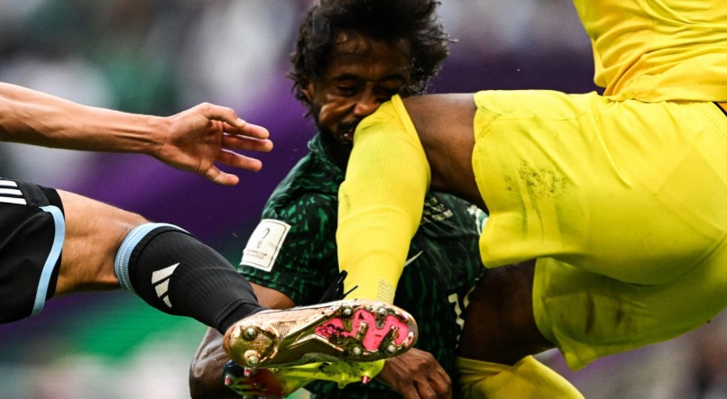
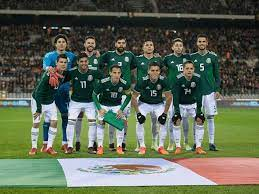
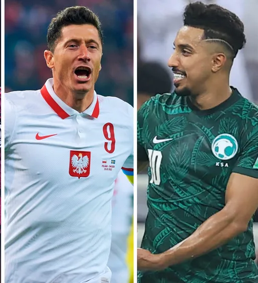
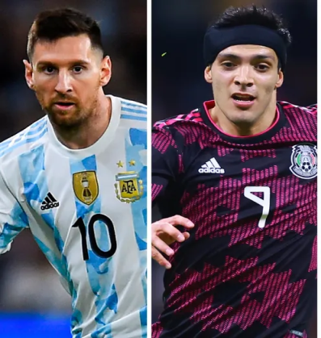

O QUE VOCÊ ESTÁ PROCURANDO?

Messi resolve jogo complicado contra o México e mantem a Argentina viva na copa do mundo

Jogador da Arábia Saudita passa por cirurgia após choque durante estreia na copa do mundo

México é a equipe de maior sucesso nacional na CONCAF, única da região com título da FIFA.
Polônia vence a Arábia Saudita e Lewandowski desencanta na Copa do Mundo

As disputas do Grupo C da Copa do Mundo FIFA 2022 acontecerá de 22 a 30 de novembro. O grupo é formado por Argentina, Arábia Saudita, México e Polônia. As duas melhores equipes avançam para as oitavas de final. Com a vitória da Polônia sobre a Arábia Saudita,válida pela segunda rodada da Copa do Mundo o Grupo C embolou de vez. Às 16h (de Brasília), a Argentina entrou em campo pressionada contra o México,mas venceu oduelo. Os quatro pontos conquistados fazem da Polônia a líder do Grupo C.Contra os sauditas,os poloneses venceram por 2 a 0, com gols marcados por Zielinskie Lewandowski. A Argentina se recuperou e foi à segunda posição com a vitória sobre o México. Os "hermanos" têm 3 pontos. A Arábia Saudita ocupa a terceira posição,também com 3 pontos, mas com saldo de gols inferior ao da Argentina. O México é o lanterna do grupo, com apenas 1 ponto em dois jogos disputados Invicta desde 2019, a Argentina de Lionel Messi é, indiscutivelmente, a grande favorita do Grupo C da Copa do Mundo, à frente da Polônia de Robert Lewandowski, de uma renovada seleção mexicana e da incógnita Arábia Saudita.
